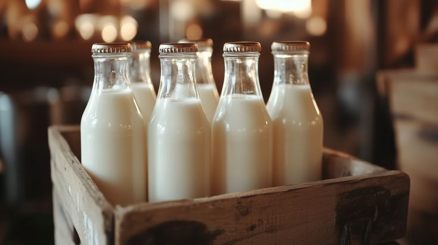
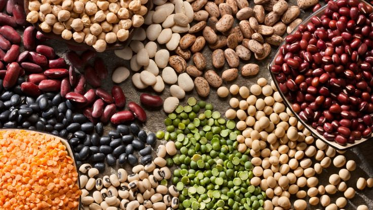
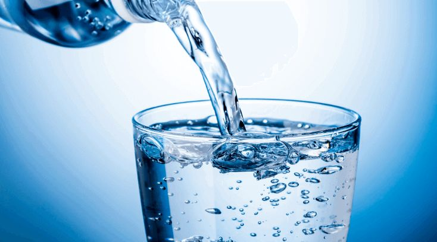
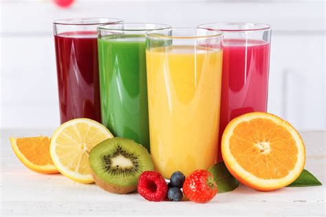

Vitamin & Mineral
Penuhi kebutuhan vitamin dan mineral Anda untuk mendukung daya tahan dan metabolisme tubuh.

Buah Segar
Kaya vitamin C dan antioksidan, membantu meningkatkan daya tahan tubuh.

Sayur Hijau
Sumber vitamin K dan zat besi alami untuk kesehatan darah dan tulang.

Susu
Mengandung vitamin D dan kalsium penting untuk kesehatan tulang.

Kacang-Kacangan
Kaya magnesium dan zinc yang mendukung pemulihan tubuh.

Air Putih
Membantu metabolisme dan menjaga keseimbangan cairan tubuh.

Jus Segar
Cara lezat untuk mendapatkan vitamin dari buah alami tanpa tambahan gula.